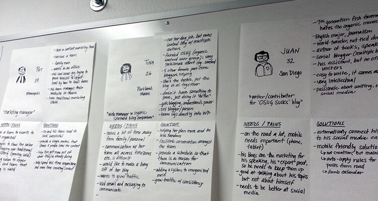

(Picture from Smashing Magazine)
Humanizing your research data
A design process can be made much more engaging with the use of personas. Personas represent potential users of a particular design. One of the most important roles that personas play in a design process is that they form a shared basis of communication. As such, information and data points from various sources such as market research, prototypes, usability studies, etc. can be conveyed to the project participants.
I've had many opportunities to engage in various persona generation activities throughout my UX career. In one particular example, we were trying to create four personas to use for a particular travel website. We found persona creation to be a fantastic way to put together all the research and analysis that we had conducted, and create a potential user base for whom we were designing the site. Just as John Pruitt and Jonathan Grudin explain in their paper Personas: Practice and Theory, personas help understand affinities within a model and allow for creative visual exploration (Pruitt & Grudin, 2003).
In its essence, a persona helps teams better relate with their users through a specific character - one that comes fully characterized with a name, age, profession, and, undoubtedly, a personality.
Going back to our travel website project, we were able to provide a better and more functional design to our product as the personas we created opened doors to better design ideas. Personas also help designers answer important design questions – why this design, why this product, why does it need this feature, and so on. They are also a very effective way in helping designers empathize more with their users as they have a real persona out there with clearly defined needs and goals. Essentially, those of whom they are designing for.
I've always found the random placement of personas around the office to be a great method for reminding teams of who they are designing/building their products for.
Contextualizing your personas with scenarios
A design scenario is essentially a story or situation with settings, agents, actors, goals, plot and/or a series of actions or events (Pruitt & Grudin, 2003). Consider this example:
"Sarah, a retired medical professor, wishes to plan a trip to Vienna, Austria as she has a medical conference to attend. She has a limited budget of $25,000 and she wishes to travel with her husband, who is physically handicapped.”
This is a short and concise scenario that can help a designer understand and create a design that addresses the implicit underlying issues which a scenario aids in highlighting. Scenarios help designers reflect on their design work and allow them to understand details better. Scenarios also allow the goal and desires of a particular persona come forth clearly, which provides a basis for design. Value scenarios add the importance of stakeholders to a scenario. It is important to analyze stakeholders and integrate them into the design equation wherever and whenever necessary.
Drawing on the example of our project, designing a travel website not only involves the potential users as stakeholders, but also flight companies, rail companies, hotels, advertisers, sponsors etc. It is important to create and sustain a design that adds value to all the important stakeholders involved.
Value based scenarios also focus on long term effects of a design or technology. Sometimes in the design process, it is easy to get fixated on an immediate design issue without keeping the bigger picture in mind. Taking into consideration changes with time - whether they are technological advancements and/or simple user requirements that change with time - can lead to the creation of more effective and sustainable designs. Personas also give room for improvisation over the long term as they can be easily revised to keep up with new research, data and demand (Pruitt & Grudin, 2003).
Design needs to become adaptive to certain changes that take place through time. Such adaptations can provide space for innovation to take flight.
What about "anti-personas"?
Finally, an important element of the design process is to know what you are not designing. Anti-personas, which represent those who would potentially not use the product, and value scenarios help envision the diverse range of negative influences the design can have on the overall user experience. In this regards, a successful design process is one that makes the best logical approach based on personas and scenarios (especially value scenarios) and take into consideration all the elements/values that can be derived from them.